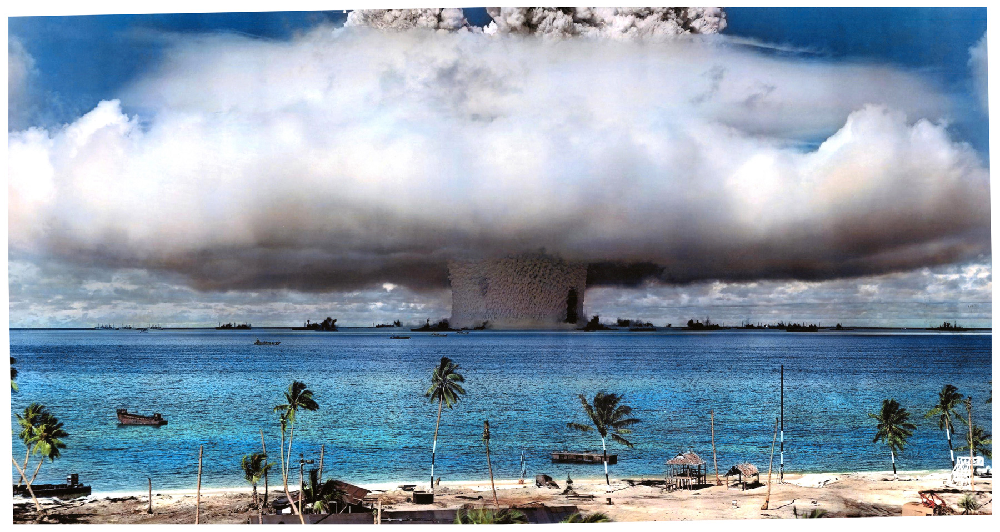
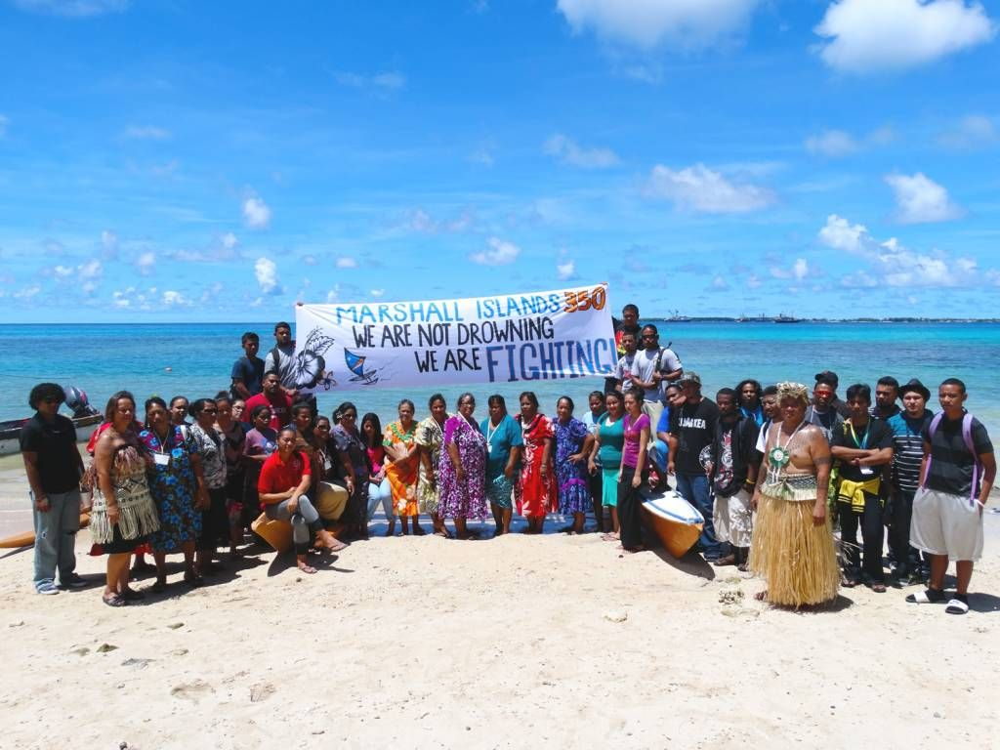

How are they sinking?
Has global warming truley made an impact on our world? Does the 2-degree global temperature increase do anything?
Well, the Marshall Islands have seen one of the worst affects. Rising sea-levels and the Marshall Islands' history of nuclear blasts in the area causes them to be one of the first to fall underwater in the near future.
The Marshall Islands was founded in 1884 by the German Empire, for the purpose of establishing a trading post, but humans have inhabited the island for over 2000 years. It was captured by the Imperial Japanese Navy in 1914 during World War I and ruled until 1920. It was then mandated by the Empire of Japan until the beginning of World War II. Thereafter, it was invaded by United States troops and finally gained independence in 1986. During the United States control, it performed over 105 nuclear tests on the islands with more than 30 megatons of TNT, spreading tons of nuclear waste and radioactive material in the area during the cold war. Because of these tests, the environment has suffered and has contributed to the rising-sea levels, mostly caused by global warming. Now, they are one of the first to fall underwater in the near future.
Our mission is to spread
awareness of the rising sea levels in the area and support the communities/culture of the Marshall Islands.
Our interactive 3D models show the rise of the sea levels on some of the Marshall Islands that have tide-gauge data.
These visuals can be rotated, zoomed in, and viewed over the years to truly understand the effect global warming has
on these sinking atolls. We also have options to view the atolls in the future to predict future outcomes for the
Marshall Islands. This helps viewers like you understand when the communities living there would have to leave, and
when the atolls would become uninhabitable.
Atolls in the Marshall islands that have tide gauge data.
Click here to learn more about how you can help